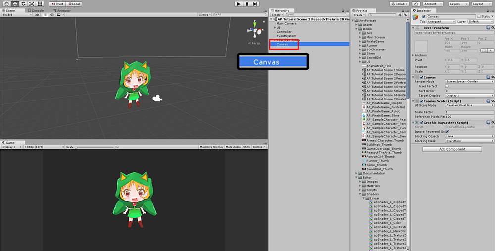
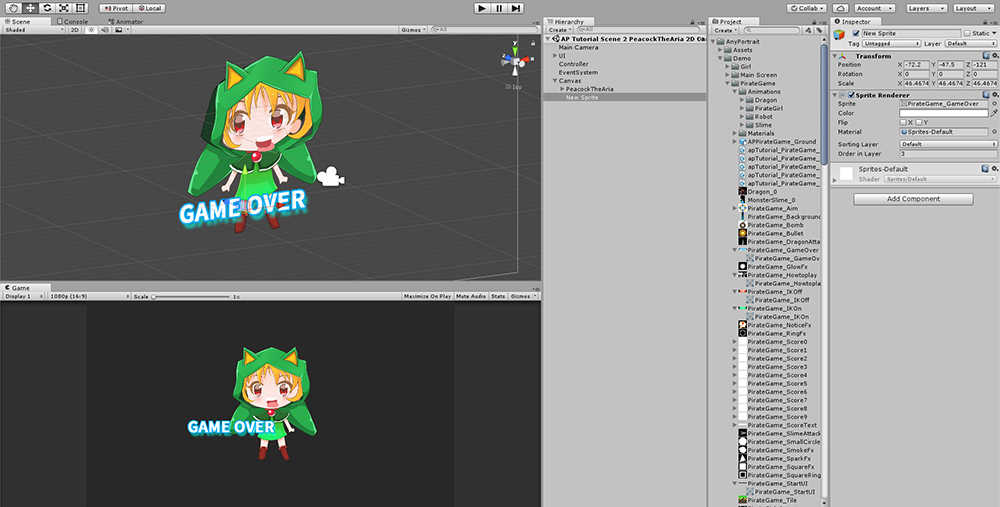

AnyPortrait > 메뉴얼 > 유니티 2D 캔버스 이용하기
유니티 2D 캔버스 이용하기
1.0.0
유니티를 이용하여 2D 게임을 만들때, 캔버스(Canvas)는 화면에 맞게 스프라이트 등을 조절하는 유용한 컨테이너로서 사용됩니다.
AnyPortrait로 생성된 캐릭터를 캔버스와 같이 게임에 사용하는 것은 좋은 방법일 수 있지만, 구조적으로 몇가지 제약사항이 있습니다.
이 페이지에서는 캔버스와 AnyPortrait를 같이 사용하기 위해 설정하는 방법을 다룹니다.

기본적으로 AnyPortrait로 캐릭터를 만들면 Orthographic 방식의 카메라와 2.5D의 캐릭터가 있는 씬으로 구성되어야 합니다.

캔버스(Canvas)를 추가합니다.

캔버스의 Render Mode는 기본적으로 "Screen Space - Overlay"이지만,
안타깝게도 AnyPortrait에서는 이 방식을 지원하지 않습니다.
Render Mode를 "Screen Space - Camera", 또는 "World Space"로 설정합니다.
"Screen Space - Camera"로 설정한 경우 AnyPortrait로 만든 캐릭터를 렌더링하고 있는 카메라를 연결합니다.
Plane Distance는 렌더링 범위 안에 들도록 적절히 수정합니다.

AnyPortrait로 만든 apPortrait 캐릭터가 캔버스의 자식 객체가 되도록 Hierarchy를 변경합니다.
이렇게 설정해야 캔버스가 확대/축소 될 때 apPortrait 객체도 자동으로 크기가 조절됩니다.

Sorting Order 등을 이용하면 다른 스프라이트(Sprite)객체와 함께 2D 게임을 구성할 수 있습니다.